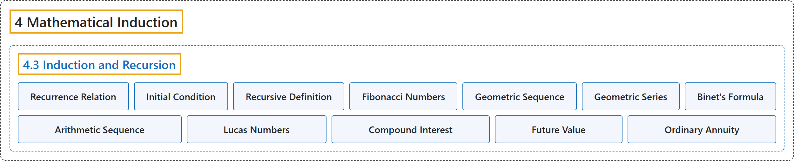

4.3 Induction and Recursion
Classification

Glossary
| Term | Definition | 中文翻译 | Source |
|---|---|---|---|
| 4 Mathematical Induction 数学归纳法 |
(No definition) | （无定义） | Sundstrom, 2022, chapter 4 |
| 4.3 Induction and Recursion 归纳与递归 |
(No definition) | （无定义） | Sundstrom, 2022, section 4.3 |
| Recurrence Relation 递推关系 |
"The specific definition of the first term is called the initial condition, and the general definition of \(a_{n + 1}\) in terms of \(n\) and the first \(n\) terms \(a_1 ,a_2 , \ldots ,a_n\) is called the recurrence relation." | 第一项的具体定义称为初始条件，而用 \(n\) 和前 \(n\) 项 \(a_1 ,a_2 , \ldots ,a_n\) 表示 \(a_{n + 1}\) 的一般定义称为递推关系。 | Sundstrom, 2022, section 4.3 |
| Initial Condition 初始条件 |
"The specific definition of the first term is called the initial condition" | 第一项的具体定义称为初始条件 | Sundstrom, 2022, section 4.3 |
| Recursive Definition 递归定义 |
"Another way to define a sequence is to give a specific definition of the first term (or the first few terms) and then state, in general terms, how to determine \(a_{n + 1}\) in terms of \(n\) and the first \(n\) terms \(a_1 ,a_2 , \ldots ,a_n\text{.}\) This process is known as definition by recursion and is also called a recursive definition." | 定义数列的另一种方法是给出第一项的具体定义（或前几项的），然后一般地说明如何确定 \(a_{n + 1}\)（用 \(n\) 和前 \(n\) 项 \(a_1 ,a_2 , \ldots ,a_n\) 表示）。这个过程称为递归定义法，也称为递归定义。 | Sundstrom, 2022, section 4.3 |
| Fibonacci Numbers 斐波那契数 |
"The Fibonacci numbers are a sequence of natural numbers \(f_1 ,f_2 ,f_3 , \ldots ,f_n , \ldots\) defined recursively as follows: \(f_1 = 1\) and \(f_2 = 1\text{,}\) and For each natural number \(n\text{,}\) \(f_{n + 2} = f_{n + 1} + f_n\text{.}\)" | 斐波那契数是一个自然数数列 \(f_1 ,f_2 ,f_3 , \ldots ,f_n , \ldots\)，按如下方式递归定义：\(f_1 = 1\)，\(f_2 = 1\)，并且对每个自然数 \(n\)，\(f_{n + 2} = f_{n + 1} + f_n\)。 | Sundstrom, 2022, section 4.3 |
| Geometric Sequence 等比数列 |
"This is a recursive definition for a geometric sequence with initial term \(a\) and (common) ratio \(r\text{.}\) The basic idea is that the next term in the sequence is obtained by multiplying the previous term by the ratio \(r\text{.}\)" | 这是首项为 \(a\)、公比为 \(r\) 的等比数列的递归定义。基本思想是：数列的下一项由前一项乘以公比得到 \(r\)。 | Sundstrom, 2022, section 4.3 |
| Geometric Series 等比级数 |
"For each \(n \in \mathbb{N}\text{,}\) the term \(S_n\) is a (finite) geometric series with initial term \(a\) and (common) ratio \(r\text{.}\)" | 对每个 \(n \in \mathbb{N}\)，项 \(S_n\) 是首项为 \(a\) 、公比为 \(r\) 的（有限）等比级数。 | Sundstrom, 2022, section 4.3 |
| Binet's Formula 比内公式 |
"Use induction to prove that for each natural number \(n\text{,}\) if \(\alpha = \dfrac{1 + \sqrt{5}}{2}\) and \(\beta = \dfrac{1 - \sqrt{5}}{2}\text{,}\) then \(f_n = \dfrac{\alpha^n - \beta^n}{\alpha - \beta}\text{.}\) This formula for the \(n^{th}\) Fibonacci number is known as Binet's formula" | 用归纳法证明：对每个自然数 \(n\)，若 \(\alpha = \dfrac{1 + \sqrt{5}}{2}\)，\(\beta = \dfrac{1 - \sqrt{5}}{2}\)，则 \(f_n = \dfrac{\alpha^n - \beta^n}{\alpha - \beta}\)。这个关于第 \(n^{th}\) 个斐波那契数的公式称为比内公式 | Sundstrom, 2022, section 4.3 |
| Arithmetic Sequence 等差数列 |
"An arithmetic sequence is defined recursively as follows: Let \(c\) and \(d\) be real numbers. Define the sequence \(a_1 ,a_2 , \ldots ,a_n , \ldots\) by \(a_1 = c\) and for each \(n \in \mathbb{N}\text{,}\) \(a_{n + 1} = a_n + d\text{.}\)" | 等差数列按如下方式递归定义：设 \(c\) 和 \(d\) 是实数，定义数列 \(a_1 ,a_2 , \ldots ,a_n , \ldots\) 为 \(a_1 = c\)，并且对每个 \(n \in \mathbb{N}\)，\(a_{n + 1} = a_n + d\)。 | Sundstrom, 2022, section 4.3 |
| Lucas Numbers 卢卡斯数 |
"The Lucas numbers are a sequence of natural numbers \(L_1, L_2, L_3, \ldots, L_n, \ldots \text{,}\) which are defined recursively as follows: \(L_1 = 1\) and \(L_2 = 3\text{,}\) and For each natural number \(n\text{,}\) \(L_{n+2} = L_{n+1} + L_n\text{.}\)" | 卢卡斯数是一个自然数数列 \(L_1, L_2, L_3, \ldots, L_n, \ldots\)，它按如下方式递归定义：\(L_1 = 1\)，\(L_2 = 3\)，并且对每个自然数 \(n\)，\(L_{n+2} = L_{n+1} + L_n\)。 | Sundstrom, 2022, section 4.3 |
| Compound Interest 复利 |
"Assume that \(R\) dollars is deposited in an account that has an interest rate of \(i\) for each compounding period. A compounding period is some specified time period such as a month or a year." | 假设把 \(R\) 美元存入一个账户，该账户每个计息期的利率为 \(i\)。计息期是某个指定的时间段，例如一个月或一年。 | Sundstrom, 2022, section 4.3 |
| Future Value 终值 |
"Let \(S_t\) represent the amount in the account at the end of the \(t\) th compounding period. \(S_t\) is frequently called the future value of the ordinary annuity." | 设 \(S_t\) 表示第 \(t\) 个计息期结束时账户中的金额。\(S_t\) 常称为普通年金的终值。 | Sundstrom, 2022, section 4.3 |
| Ordinary Annuity 普通年金 |
"For an ordinary annuity, \(R\) dollars is deposited in an account at the end of each compounding period." | 对普通年金，每个计息期结束时，把 \(R\) 美元存入账户。 | Sundstrom, 2022, section 4.3 |
References
Sundstrom, T. (2022). Mathematical reasoning: Writing and proof (Version 2.1; PreTeXt edition by Grand Valley State University). Retrieved October 30, 2026, from https://gvsuoer.github.io/sundstrom-textbook/frontmatter.html